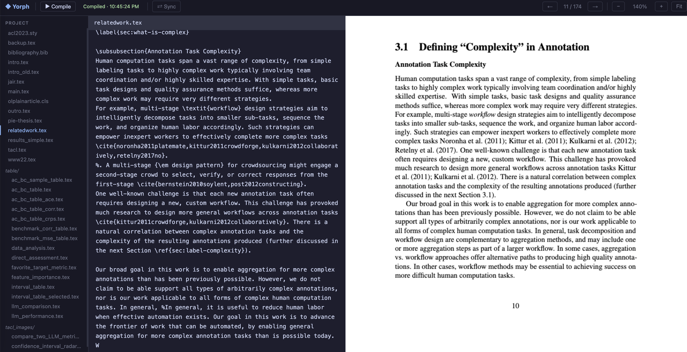
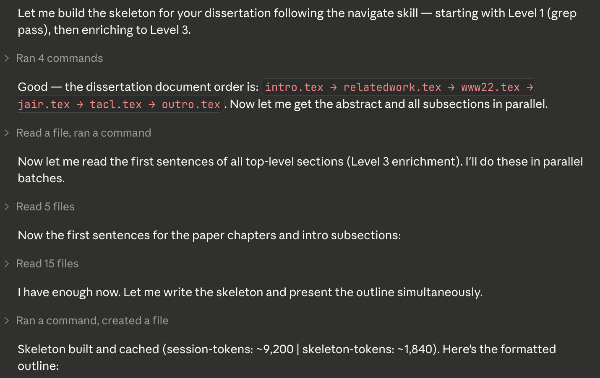
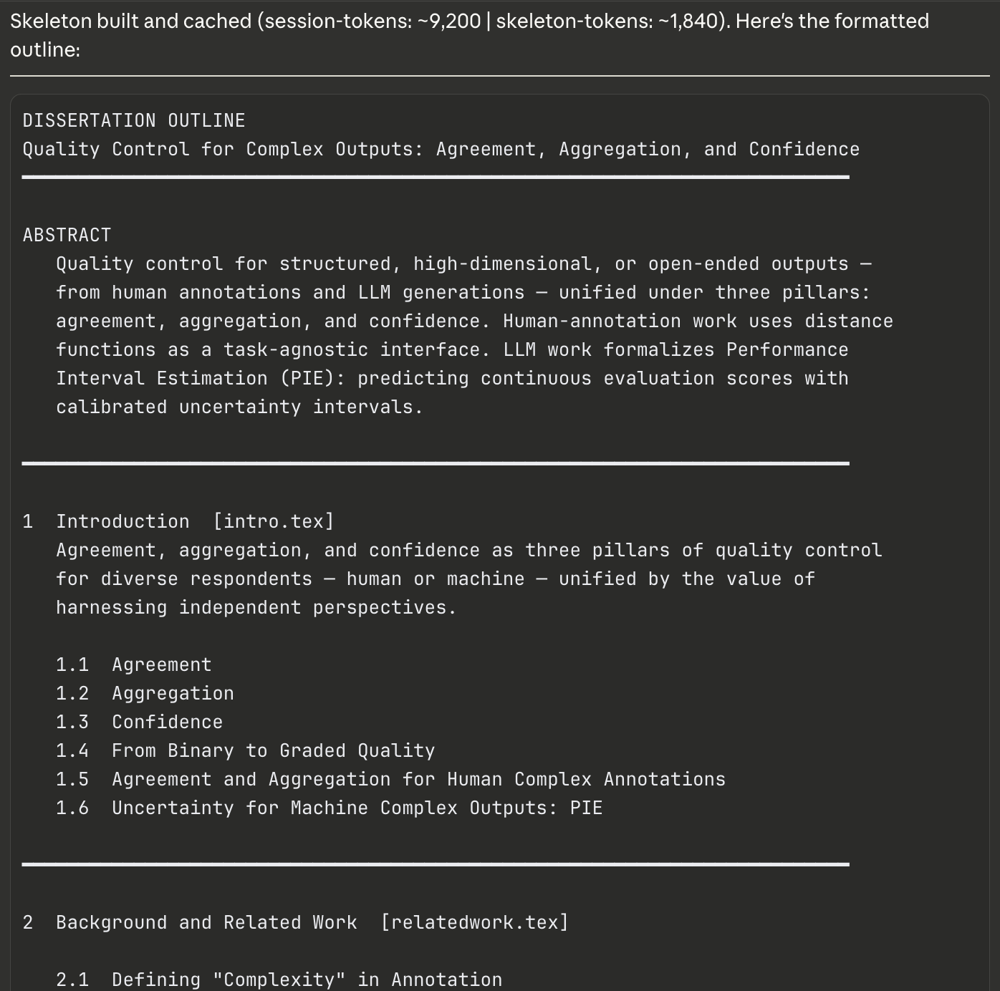
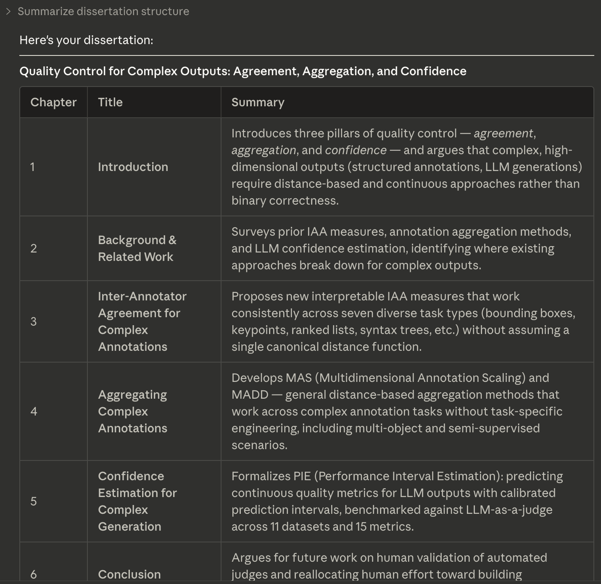
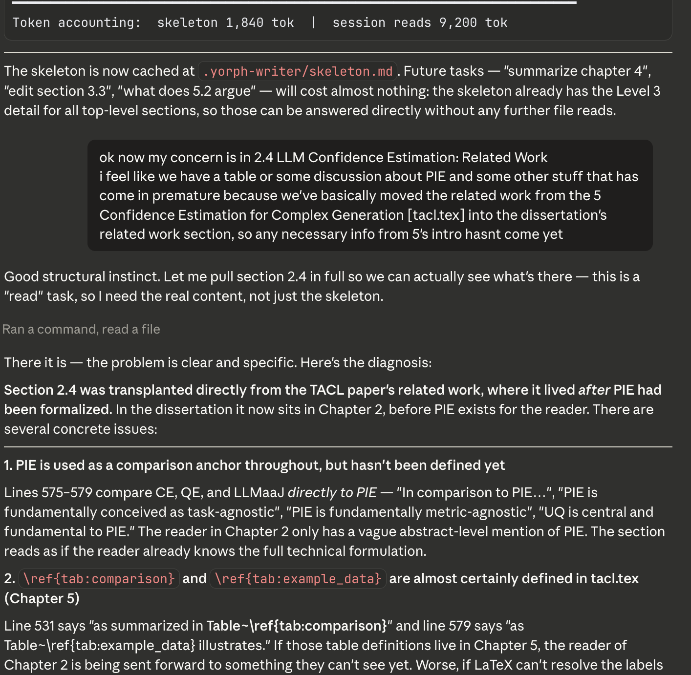
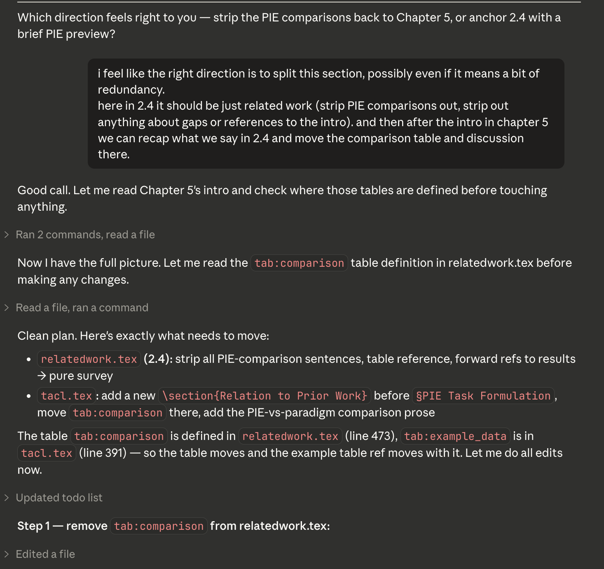
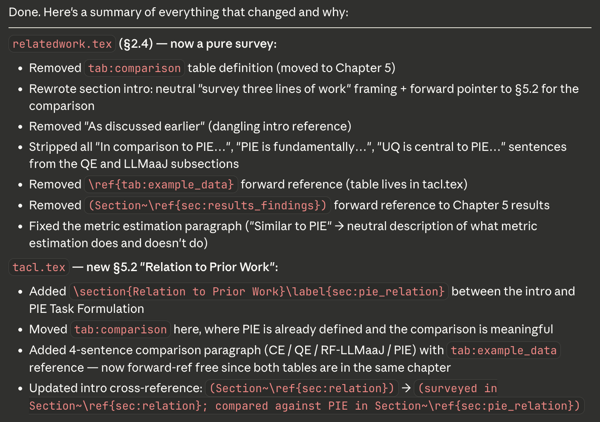
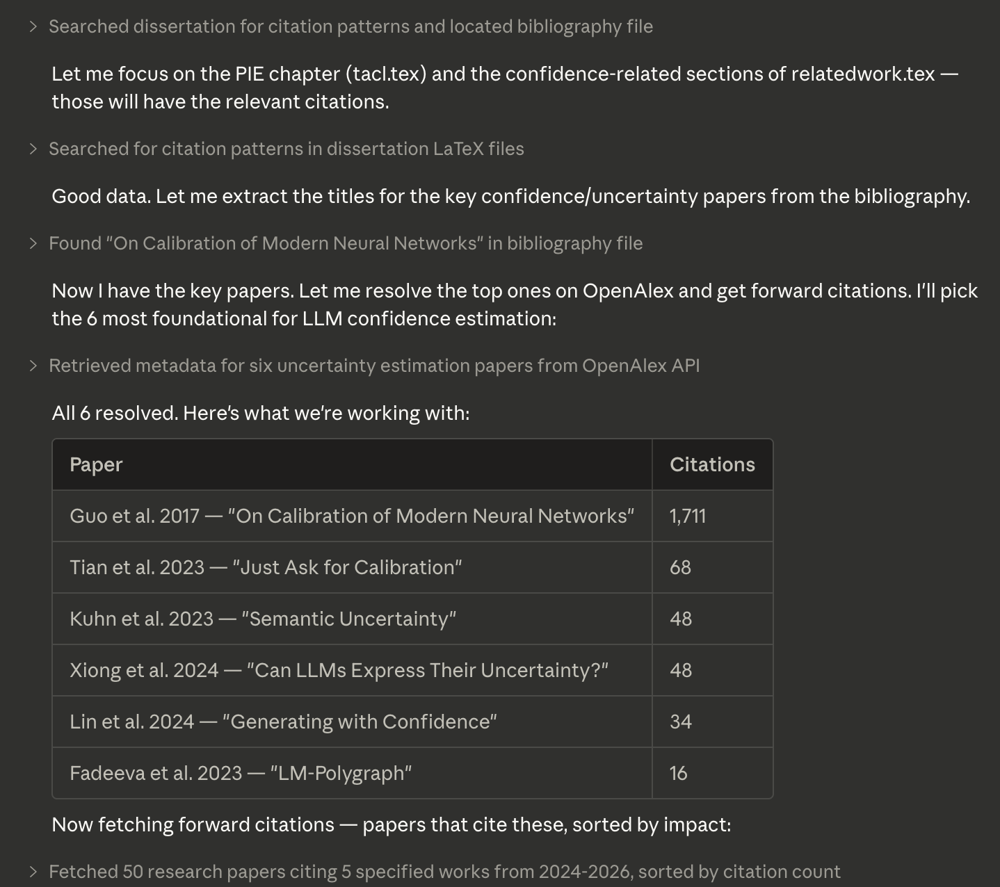
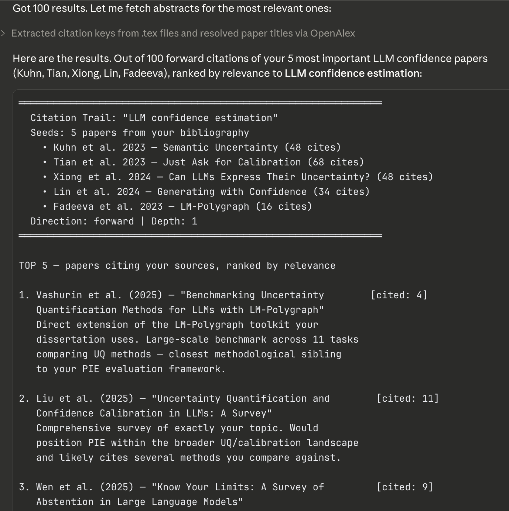

A Claude plugin for working on LaTeX papers and dissertations. Includes a live PDF viewer, structural navigation, and citation exploration. Free, no account required.
Edit your .tex files alongside a compiled PDF that updates on demand. Click the PDF to jump to the corresponding source line, or click in the editor to sync the PDF view.

The navigate skill builds a section-level skeleton of your paper and caches it — so Claude can find any section, chapter, or argument without reading the whole file every time. Token-efficient by design.


Ask for an outline and get a chapter-by-chapter summary table. Useful for getting oriented before a writing session or sharing structure with an advisor.

Describe a structural concern in plain language. Claude reads the relevant sections, identifies the specific problem, and explains exactly what needs to move and why.

Tell Claude what to move and where. It handles the edits across multiple files — removing from one section, inserting into another, updating cross-references — and shows a summary of everything that changed.


Given a topic, Claude finds the most relevant papers in your bibliography, looks them up on OpenAlex (free, no API key), and retrieves newer papers that cite them — ranked by relevance and impact. Useful for checking related work coverage before submission.

